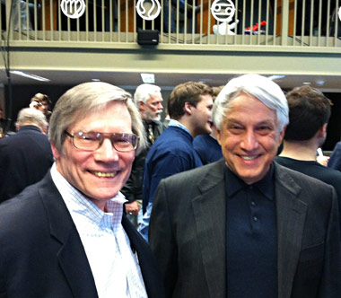

A origem do Universo
Na cosmologia moderna, a origem do Universo é o instante em que surgiram toda a Materia e Energia. A teoria doBig Bang é abertamente aceita pela ciência em nossos dias e implica que o Universo poderia se ter originado há 13,73 bilhões de anos, num instante definido.
Teoria inflacionária
Na comunidade científica há uma grande aceitação da teoria inflacionária, proposta por Alan Guth. A maior parte da pesquisa do professor Guth centrou-se na aplicação da física teórica de partículas para o universo primitivo: o que a física de partículas pode nos dizer sobre a história do universo e o que a cosmologia pode nos dizer sobre as leis fundamentais da natureza? Em 1981, ele propôs que muitas características do nosso universo, incluindo como ele veio a ser tão uniforme e por que começou tão perto da densidade crítica, pode ser explicado por um novo modelo cosmológico que ele chamou de inflação.

Alan Guth é um físico teórico e cosmólogo, mais conhecido pelo seu trabalho na teoria das partículas elementares e pela forma como a teoria das partículas é aplicável ao universo primitivo.
À Pesquisa
O professor do MIT, Alan Guth, estuda o universo primitivo. Ele trabalha na inflação, incluindo a possibilidade de inflacionar a inflação em um laboratório hipotético para criar um novo universo e se a inflação é eterna – está sempre acontecendo, em algum lugar do universo. Alan Guth
Trabalhando com o Prof. Edward Farhi e outros, Guth tem explorado a questão de saber se é em princípio possível inflacionar a inflação em um laboratório hipotético, criando assim um novo universo.
Professor Alan Guth nasceu em New Brunswick, Nova Jersey, em 1947. Ele cresceu e frequentou as escolas públicas em Highland Park, NJ, mas pulou seu último ano do ensino médio para começar a estudar no Instituto de Tecnologia de Massachusetts. Ele permaneceu no MIT de 1964 a 1971, adquirindo graus SB, SM e PhD, todos em física. Sua tese de doutorado, feita sob a supervisão de Francis Low, foi uma exploração de um modelo inicial de como os quarks se combinam para formar as partículas elementares que observamos.
Então é isso! Espero que você tenha gostado do nosso artigo com essa curiosidade sobre o Alan Guth, seus projetos e contribuições.